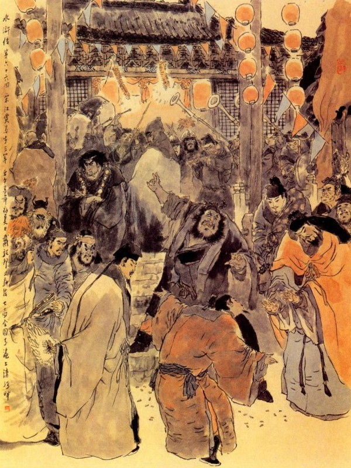
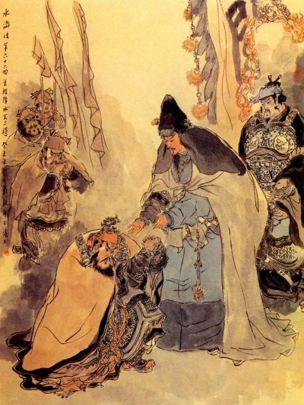

Hôm đó Ngô Dụng thu điểm nhân mã, nhất diện treo bảng an dân, nhất diện cho cứu giải ngọn lửa trong thành. Còn những người nhà Lương Trung Thư, Lý Thành, Văn Đạt cùng Vương Thái Thú, hoặc chết hay là trốn tránh cũng không truy hỏi đến nữa.
Ngô Dụng lại sai mở kho tàng trong phủ Đại Danh, đem kim ngân châu bảo xếp cả lên xe rồi lấy gạo thóc phát cả cho dân trong thành, còn thì cũng xếp cả lên xe đem về. Đoạn rồi cho Lý Cố cùng Cổ Thị nhốt vào xe tù và chia quân làm ba đội mà kéo về Lương Sơn và cho Đới Tung về báo trước với Tống Công Minh.
Tống Giang nghe nói, vội họp các Đầu Lĩnh để xuống núi đón về Trung Nghĩa Đường. Tống Giang trông thấy Lư Tuấn Nghĩa, liền cúi đầu lạy tạ, Lư Tuấn Nghĩa cũng cúi đầu mà đáp nghĩa lại. Tống Giang nói với Lư Tuấn Nghĩa rằng:
- Tống Giang tôi cả gan muốn đón ngài lên đây Tụ Nghĩa, chẳng dè gặp bước không may, cơ hồ nguy hiểm, trong lòng tôi rất áy náy không yên. Ngày nay may mà trời xanh thương xót, lại được gặp đây, thực là hạnh phúc cho sơn trại không biết tới đâu mà kể.
Lư Tuấn Nghĩa bái tạ mà rằng:
- Tôi trên nhờ uy đức của Huynh trưởng, dưới nhờ nghĩa khí của các Đầu Lĩnh, hết lòng cứu vớt cho được tới đây, sau này biết lấy gì báo đáp cho phu công ấy.
Nói đoạn liền dẫn Xái Phúc, Xái Khánh vào chào Tống Giang mà nói rằng:
- Nếu bữa trước không có hai người này thì còn sao mà bước chân đến đây được?
Đoạn rồi Tống Giang nhường ghế thứ nhất cho Lư Tuấn Nghĩa ngồi. Lư Tuấn Nghĩa cả kinh mà rằng:
- Tôi là hạng người thế nào mà dám nhận chức vụ ấy? Huynh trưởng có lòng thương yêu cho tôi được làm đứa tiểu tốt theo hầu cũng là hạnh phúc, xin Huynh trưởng chớ nên quá nhúng làm chi.
Tống Giang cố mời hai ba lần nữa, Lư Tuấn Nghĩa nhất định không chịu nhận. Lý Quỳ thấy vậy kêu lên rằng:
- Ca Ca không thẳng tính chút nào cả. Ngày trước đã nhận rồi, ngày nay lại nhường cho người khác. Cái ghế ấy có lẽ làm bằng vàng hay sao mà nhường đi nhường lại mãi. Làm thế tôi sốt ruột không sao chịu được.
Tống Giang quát to lên rằng:
- Thằng quái này.
Lư Tuấn Nghĩa vội vàng cúi lạy Tống Giang mà nói rằng:
- Nếu Huynh trưởng cứ nhường mãi vậy thì có lẽ tôi ở đây không yên tâm mất.
Lý Quỳ lại quát lên rằng:
- Nếu Ca Ca làm ông vua, Lư Viên Ngoại làm thừa tướng, đám chúng ta cùng ở trên kim điện thì làm chi có rối lên như thế này được. Nhưng nay bất quá chỉ là một bọn ăn cướp ở trong vũng nước này thì bất nhược cứ lặng yên như cũ là xong.
Tống Giang nghe nói tức mình không biết nói làm sao được. Ngô Dụng nói với Tống Giang rằng:
- Ngày mai hãy để Lư Viên Ngoại ở phòng bên Đông, đãi lễ tân khách rồi sau này có công sẽ xin nhường vị cũng được.

Tống Giang nghe vậy mới hơi yên tâm, liền mời Lư Tuấn Nghĩa ra ở phòng bên Đông, cho Yến Thanh cùng ở vào đó. Lại dọn phòng cho anh em Xái Phúc ở. Bấy giờ Tiết Vĩnh đi đón người nhà Quan Thắng đã về cũng cho dọn phòng để ở cẩn thận. Đoạn rồi trong sơn trại làm đại tiệc khao thưởng tam quân, các Đầu Lĩnh lớn nhỏ cùng đám lâu la hợp từng đoàn từng đội mà chè chén với nhau. Hôm đó các Đầu Lĩnh cùng uống rượu ở Trung Nghĩa Đường. Lư Tuấn Nghĩa đứng dậy nói rằng:
- Còn có hai đứa gian phu dâm phụ đã bắt đến đây, xin trị tội cho công bằng.
Tống Giang cười nói rằng:
- Suýt nữa tôi quên mất đấy, quân sĩ đâu, dong nó lên đây.
Quân sĩ vâng lời, đem Lý Cố trói sang cột bên tả, Cổ Thị trói sang cột bên hữu để trị tội. Tống Giang nói với Lư Tuấn Nghĩa rằng:
- Bây giờ không cần phải hỏi tội làm chi, xin Viên Ngoại cứ xử đoán đi là xong.
Lư Tuấn Nghĩa vâng lời, tay cầm đoản đao bước ra quát mắng hai người, khoét lấy ruột giữa, bắt tội tùng xẻo cho chết, sai đem vứt bỏ xác đi rồi quay vào tạ ơn các Đầu Lĩnh. Các Đầu Lĩnh đều nâng chén rượu mừng rồi lại cùng nhau yến ẩm vui chơi, rất là thoả thích.
Bây giờ ân trả nghĩa đền,
Trăm năm cố kết chút duyên guang hồ.
Máu nồng pha chén hoan hô,
Giang sơn riêng một cơ đồ kém ai?
Nói về tụi Lương Trung Thư khi dò biết quân mã Ngô Dụng đã trở về Lương Sơn Bạc, liền cùng với Lý Thành, Văn Đạt thu nhặt bọn quân tàn mà trở lại đất Đại Danh. Khi về tới phủ vợ con trẻ già, mười phần còn sót một hai, người nào người ấy kêu khóc như mưa vậy.
Bây giờ các phủ huyện ở gần đấy kéo quân đến để cứu thì giặc đã về rồi. Lương Trung Thư lại truyền lệnh cho các phủ huyện đâu về yên đấy. Lương Trung Thư phu nhân trốn vào vườn hoa đằng sau, may được thoát nạn. Trung Thư thấy vậy lấy làm cảm thương vô cùng, liền khảo giấy bẩm vào Xài Thái Sư xin khiển tướng điều binh đi đánh Lương Sơn. Trong đó kể hết tình thế giặc Lương Sơn và sự thiệt hại trong thành Đại Danh, dân số chết hơn năm ngàn người, trúng thương rất nhiều và các bộ quân mã thì thiệt tới hơn ba vạn. Khi viết thư xong, sai Thủ Tướng lập tức đem thư vào kinh để trình với Xài Thái Sư.
Nguyên trước Xài Thái Sư những tưởng rằng ít lâu rồi bọn Lương Sơn đầu hàng thì tâng công cho Lương Trung Thư mà tự mình cũng có phần vinh hạnh. Nay bất đồ nghe tin như vậy thì trong lòng lấy làm tức giận vô cùng, liền cho tỳ tướng lui ra rồi sẽ vào tấu với Thiên Tử. Thiên Tử xem biểu tấu cả kinh, chưa biết nghĩ kế ra sao.
Bỗng có quan Gián Nghị Đại Phu là Triệu Đĩnh, bước ra bệ ngọc tâu rằng:
- Trước đây triều đình đã điều binh khiển tướng cũng đều bị thua thiệt rất nhiều là vì không được địa lợi cho nên mới thế. Vậy ngày nay cứ theo như ý ngu thần, xin bệ hạ giáng chỉ chiêu an mời về Kim Khuyết mà trao cho quan chức để coi chốn biên cương tất là yên ổn được.
Xài Thái Sư nghe tâu, cả giận quát mắng rằng:
- Ông làm Gián Nghị Đại Phu sao dám bỏ kỷ cương triều đình mà để tiểu nhân càn dỡ như thế được? Tội ấy đáng chết đó.
Thiên Tử nghe lời Thái Sư tâu, liền đuổi bỏ Triệu Đĩnh ra triều mà cách hết quan chức. Các quan thấy vậy ai cũng không dám hé răng ra tâu một câu gì nữa. Thiên Tử hỏi Xái Kính rằng:
- Nay quân giặc lộng hành như vậy, phỏng lấy ai ra mà đánh giúp cho được?
Xài Thái Sư tâu rằng:
- Cứ như ý ngu thần thiết tưởng quân giặc cỏ ấy không cần gì phải đem đại quân mới tiểu trừ được. Hiện nay ở Lăng Châu có hai tướng giỏi, một người họ Đan tên Đình Khuê và một người họ Ngụy tên Định Quốc làm Đoàn Luyện Sứ ở châu ấy, đều có thể tiểu trừ được quân giặc cỏ. V6ạy xin Thánh Thượng lập tức giáng chỉ cho hai người đó, đem quân đi đánh thì làm chi mà chẳng trừ xong.
Thiên Tử nghe tâu cả mừng, bèn lập tức giáng chỉ cho hai người đó. Đoạn rồi tan chầu, các quan đều bưng miệng cười thầm mà cùng nhau lui về.
Nói về bọn Lương Sơn Bạc, sau khi đã khao thưởng quân sĩ xong rồi, Ngô Dụng liền nói với Tống Giang rằng:
- Nay ta vì việc Lư Viên Ngoại đánh phá thành Đại Danh, nhân dân thiệt hại rất nhiều làm Lương Trung Thư phải trốn tránh. Việc này chắc là hắn phải tâu với triều đình và ỷ thế bố vợ là Xài Thái Sư, thế nào cũng chả yên được.
Vậy ta nên nghĩ kế làm sao mới xong. Tống Giang nói:
- Quân Sư dạy rất phải lắm. Ta nên sai người đi thám thính xem thế nào rồi sẽ liệu.
Ngô Dụng cười rằng:
- Tiểu đệ đã sai người đi thám rồi, có lẽ về ngay bây giờ đó.
Đương khi trò chuyện thì quả nhiên có người về báo rằng:
- Lương Trung Thư tâu với triều đình, Gián Nghị Đại Phu cố tâu với Thiên Tử xin giáng chỉ chiêu an, song bị Thái Sư hành tội, cách cả chức quan của triều đình và sai người truyền chỉ cho Đan Đình Khuê và Ngụy Định Quốc ở Lăng Châu phải đem quân đi đánh.
Tống Giang hỏi Ngô Dụng rằng:
- Như vậy ta làm cách nào để nghênh địch?
Ngô Dụng nói rằng:
- Đợi họ đến đây rồi ta bắt cả một thể khó chi?
Quan Thắng đứng dậy nói rằng:
- Quan Mỗ từ khi đến đây, chưa có chút công lao gì, nay Đan Đình Khuê cùng Ngụy Định Quốc cũng là anh em khi trước. Đan Đình Khuê tài về nghề tháo nước để đánh giặc, thường gọi là Thánh Thủy Tướng Quân, còn Ngụy Định Quốc thì thông thạo về trận hoả công, khi ra trận thường lấy đồ lửa mà đánh nhau, vẫn gọi là Thần Hoả Tướng Quân. Vậy tôi xin lĩnh năm nghìn quân mã thẳng đến Lăng Châu để đón. Nếu dỗ được quy hàng thì mang cả về đây, bằng không thì tôi xin bắt về nộp, không cần gì phải khó nhọc đến anh em, chẳng hay tôn ý có cho chăng?
Tống Giang cả mừng, liền cho Tuyên Tán và Hắc Tư Văn theo Quan Thắng cùng đi. Sáng hôm sau Quan Thắng dẫn năm nghìn nhân mã và đem hai tướng cùng đi xuống núi, các Đầu Lĩnh đưa chân đến bến Kim Sa rồi lại trở về Trung Nghĩa Đường để bàn việc. Ngô Dụng nói với Tống Giang rằng:
- Tôi xem Quan Thắng đi chuyến này, vị tất đã được vững lòng, vậy xin sai tướng khác đi theo tiếp ứng và coi giữ một thể. Tôi xem Quan Thắng là người nghiêm nghị nghĩa khí, trước sau như một, quân sư bất tất phải đa nghi như vậy.
- Tôi chỉ sợ bụng người ta không được như bụng Huynh trưởng mà thôi. Ta cứ cho Lâm Xung, Dương Chí làm lĩnh binh, Tôn Lập, Hoàng Tín làm phó tướng dẫn năm ngàn nhân mã thì vững hơn.
Lý Quỳ nghe nói liền ứng lên rằng:
- Để cho tôi đi một chuyến.
Tống Giang nói:
- Việc này không cho ngươi đi được, đã có tướng giỏi người ta lập công.
Lý Quỳ nói:
- Nếu tôi rỗi lâu thì sinh bệnh mất, Huynh trưởng không cho tôi đi, tôi cũng đi một mình vậy.
Tống Giang quát lên rằng:
- Ngươi không nghe quân lịnh, ta chém đầu đi đó.
Lý Quỳ nghe nói trong bụng bứt rứt khó chịu, liền thủng thỉnh mà quay ra. Đoạn rồi Lâm Xung, Dương Chí lĩnh quân đi đến Lăng Châu để theo Quan Thắng. Ngày hôm sau chợt thấy tiểu quân vào báo:
- Hồi canh hai hôm qua Hắc Toàn Phong Lý Quỳ vác song phủ đi đâu mất rồi.
Tống Giang nghe báo lấy làm hối hận mà rằng:
- Chắc vì mình gắt mấy câu hôm qua, nên hắn đi với người khác hẳn?
Ngô Dụng nói rằng:
- Huynh trưởng bất tất phải nghĩ vậy. Hắn là người thô mãng, nhưng nghĩa khí, chắc là hắn không đi đâu, chỉ nay mai lại về đây thôi.
Tống Giang vẫn lấy làm sốt ruột, liền sai Đới Tung đi theo trước rồi sai Thời Thiên, Lý Vân, Nhạc Hoà, Vương Đình Lục chia làm bốn đường đi theo sau. Nguyên Lý Quỳ hôm đó bị Tống Giang ngăn đón không cho đi, trong bụng lấy làm bứt rứt, liền về phòng nghỉ rồi nửa đêm vác búa trốn sang Lăng Châu.
Khi đi đường chàng nghĩ thầm rằng: "Hai anh tướng ranh ấy, cần gì phải mang bao nhiêu quân đi đánh? Ta cứ vào thành cho mỗi đứa một búa, cho Đại ca kinh một mẻ mới hả lòng".
Chàng vừa nghĩ vừa hăm hở đến nửa ngày trời, trong bụng đã đói, sờ túi không có đồng tiền nào cả. Nguyên khi đi chàng đương bực tức vội vàng nên không kịp đem tiền hành lý để tiêu dùng. Bấy giờ chàng lại nghĩ: "Đã lâu nay ta không làm món nào, nay ta thử chơi một món xem sao?”
Nghĩ đoạn liền lững thững vừa đi vừa nhìn quanh nhìn quẩn một mình. Chợt đâu thấy bên đường có một ngôi hàng rượu, chàng liền chạy vào ngôi hàng rượu lấy ba nai rượu và hai cân thịt lên để đánh chén. Khi ăn uống xong, bèn đứng phắt dậy mà đi thẳng, tên tửu bảo giữ lại để hỏi tiền.
Chàng liền đáp rằng:
- Để ta ra chỗ này kiếm được món gì rồi sẽ đem lại trả.
Nói đoạn quay ra để đi. Chợt đâu có một chàng to lớn ở ngoài chạy vào quát lên rằng:
- Thằng quỷ đen kia to gan thật! Ai mở hàng rượu cho ngươi ăn không, không chịu trả tiền?
Lý Quỳ trợn mắt tròn xoe đáp rằng:
- Lão gia bất cứ chỗ nào chỉ ăn mà thôi.
Anh kia lại quát lên rằng:
- Ta nói câu này cho ngươi mất vía nhé! Phải biết rằng: Lão gia đây chính là Hàn Bá Long ở Lương Sơn Bạc, mở ngôi hàng này là tiền của Tống Giang Ca Ca đó.
Lý Quỳ nghe nói liền cười thầm rằng:
- Trong sơn trại ta làm gì có của ranh này mà nói?
Nguyên Hàn Bá Long vẫn thường cướp bóc giang hồ xưa nay. Dạo trước có đến nói với Chu Quý, xin đưa lên núi, để nhờ nói với Tống Giang xin vào nhập bọn, song chẳng may Tống Giang bị bệnh chưa khỏi, nên Chu Quý bảo tạm ra đó mở cửa hàng để đợi Tống Giang khỏi rồi sẽ đưa lên núi. Hôm đó Lý Quỳ nghe nói liền rút thanh phủ ở lưng ra chìa đưa cho Hàn Bá Long mà bảo rằng:
- Nếu vậy anh cầm lấy cái búa này.
Hàn Bá Long thấy vậy, tưởng là thực tình liền giơ ra tiếp lấy. Lý Quỳ liền thừa thế, nhè giữa mặt chém cho một phủ chết quay ra đất. Mấy tên người nhà thấy vậy vội vàng kéo nhau chạy vào trong làng để trốn. Lý Quỳ vào nẫng lấy tiền nong rồi châm lửa đốt bỏ tửu quán mà lên đường chạy về Lăng Châu. Đi chừng được một ngày đường, chợt trông thấy một anh chàng to lớn đi đến đó, đứng dừng lại mà ngẩng lên cúi xuống để nom Lý Quỳ.
Lý Quỳ thấy vậy hỏi rằng:
- Ngươi nom lão gia để làm chi thế?
Anh chàng kia lại hỏi rằng:
- Ngươi là lão gia ai?
Lý Quỳ không nói năng gì, vội vàng toan sấn vào để đánh. Anh chàng kia giơ tay quyền lên để đón đánh Lý Quỳ. Lý Quỳ thấy tay quyền của anh kia ra vẻ thạo giỏi, liền ngồi xuống dưới đất rồi ngửa mặt lên hỏi rằng:
- Anh họ chi, tên chi?
Anh chàng kia đáp rằng:
- Lão gia đây không có tên họ, muốn đánh nhau thì đánh nhau, ngươi có giỏi thì đứng dậy đây.
Lý Quỳ cả giận toan nhảy lên đánh, bất đồ bị anh chàng kia đá cho một đá ngã lăn ngay xuống. Lý Quỳ vội kêu lên rằng:
- Ta không đánh nổi anh này rồi.
Nói đoạn ù té chạy. Anh chàng kia đứng lại mà hỏi rằng:
- Anh tên họ là gì? Người ở đâu nói cho ta biết?
Lý Quỳ đáp:
- Ngày nay bị thua anh đáng lẽ không nói ra thì phải, nhưng lại tiếc vì anh cũng là một tay hảo hán, nên không muốn giấu làm chi. Chẳng giấu gì, Hắc Toàn Phong Lý Quỳ ở Lương Sơn Bạc chính là tôi đây.
- Anh có thực là Lý Quỳ hay không? Đừng nói khoác mới được.
- Anh không tin cứ nom song phủ của tôi đây.
- Anh đã là hảo hán ở Lương Sơn Bạc, cớ sao lại đi đâu một mình như vậy?
- Vì tôi tức với Tống Ca Ca tôi, nay muốn sang Giang Châu giết hai anh tướng họ Đan, họ Ngụy cho Ca Ca tôi biết tay đây.
Tôi nghe nói Lương Sơn Bạc đã có quân mã kéo đi rồi, vậy ai đi đấy anh có biết không?
- Toán quân có Đại Đao Quan Thắng đi trước, Lâm Xung, Dương Chí đi sau chứ ai.
Anh chàng kia nghe nói đến đó, vội cúi đầu mà lạy ngay. Lý Quỳ lại hỏi:
- Bây giờ anh nói tên họ cho tôi nghe mới được.
- Tôi nguyên ở phủ Trung Sơn, ba đời nay vẫn truyền nghề đánh vật, ngón đánh lúc nãy là cha con truyền dạy cho nhau mà không dạy người ngoài bao giờ. Bình sinh không hề giao thiệp với ai, nên đến đâu cũng không ai chứa, nhân thế các mạn Sơn Đông, Hà Bắc vẫn gọi tên là Một Diện Mục Tiêu Đĩnh. Mới đây nghe nói ở Khấu Châu có một toà núi tên là Khô Thụ Sơn trên núi có một tay du đảng họ Bào tên Húc, chỉ hay giết hại người ta, ai ai cũng gọi hắn là Táng Môn Thần, nay tôi muốn sang đó nhập đảng để kiếm cách sinh nhai cho thú.
- Anh có tài võ nghệ như vậy, sao mà không nhập đảng ở Lương Sơn, Tống Công Minh Ca Ca tôi tất là trọng đãi.
- Tôi cũng có ý muốn đến đó, song không ai tiến cử đến cho, nay được gặp Huynh trưởng đây, tôi xin đi theo một thể.
- Tôi vì giận dỗi với Tống Công Minh Ca Ca mà một mình quyết đi xuống núi, nay nếu không giết người nào mà lại trở về tay không thì về thế nào được? Vậy bất nhược tôi với Bác đi sang Khô Thụ Sơn, nói với Bào Húc cùng đi đến Lăng Châu giết hai thằng Đan, Ngụy rồi về núi thì có lẽ thú hơn.
- Ở Phủ Lăng Châu thành trì cũng vững, quân mã cũng nhiều, tôi với anh dẫu giỏi đến mười mươi cũng không làm chi được, bất quá chỉ uổng mạng thôi, vậy bất nhược ta đến Khô Thụ Sơn nói với Bào Húc đến đầu hàng ở sơn trại rồi sẽ liệu sau, thế là thượng sách.
Hai người đương bàn chuyện với nhau, bỗng thấy Thời Thiên đi đến, gọi Lý Quỳ mà kêu rằng:
- Ca Ca đương ở nhà lo khổ đây kia, xin bác về sơn trại ngay lập tức. Ca Ca đã cho người đi khắp các ngả để tìm đấy.
Lý Quỳ nghe nói liền dẫn Tiêu Đĩnh đến nói chuyện với Thời Thiên. Thời Thiên khuyên Lý Quỳ phải lập tức về núi, kẻo Tống Công Minh mong đợi:
- Lý Quỳ nói với Thời Thiên rằng:
- Bác hãy thư thả tôi đương bàn với Tiêu Đĩnh đi qua Khô Thụ Sơn, nói với Bào Húc cùng nhập vào đảng rồi tôi sẽ về.
- Làm thế không được, Ca Ca đương mong đợi lắm hãy về ngay đi.
- Bác không thích đi thì bác cứ về trước, báo với Ca Ca rồi tôi sẽ về sau.
Thời Thiên có ý sợ Lý Quỳ, bèn quay trở về, không dám nói gì nữa, Lý Quỳ liền cùng với Tiêu Đĩnh, đi sang Khấu Châu để tìm vào Khô Thụ Sơn. Nói về Quan Thái Thú ở Lăng Châu, tiếp được chiếu chỉ của triều đình sai điều binh đi đánh Lương Sơn và tiếp được tư thư của Xài Thái Sư sai bảo bèn lập tức gọi hai Đoàn Luyện Sứ là Đan Đình Khuê và Ngụy Định Quốc vào để truyền lệnh ra binh. Hai tướng vâng lời liển chỉnh quân mã, sửa sang khí giới chỉnh đốn các lương thảo, để sắp sửa khởi hành. Chợt đâu có tin báo Đại Đao Quan Thắng dẫn quân đến xâm phạm Lăng Châu, Đan Đình Khuê và Ngụy Định Quốc cả giận liền kéo quân ra thành để đón đánh.
Bấy giờ Đan Đình Khuê đầu đội mũ sắc vuông, có hai tua đen rũ xuống, ngoài khoác áo da hùm, trong mặc chiến bào thêu, chân đi đôi giầy da chạm, lưng thắt giây loan biếc, vai đeo một cây cung, một mũi tên, cưỡi con ngựa đen, khiến cây gươm đen, trước mặt dàn một lá cờ đen thuộc Bắc Phương, trên viết mấy chữ "Thánh Thủy Tướng Quân Đan Đình Khuê" bằng bạc; Ngụy Định Quốc đầu đội mũ khảm đỏ, bỏ rũ tua đỏ, ngoài khoác áo con nghê, trong mặc áo hồng bào thêu quái thú, chân đi đôi giầy thêu Kỳ Lân, lưng đeo cây cung kim thước, khoác một túi tên. Lang Nha cưỡi con ngựa sắc mỡ, tay cầm cương đao, trước mặt có lá cờ đỏ thuộc Nam Phương, viết bảy chữ "Thần Hoả Tướng Quân Ngụy Định Quốc" bằng bạc. Khi đôi bên đấu trận với nhau, Quan Thắng trông thấy hai viên hổ tướng, liền ngồi trên mình ngựa mà nói lên rằng:
- Kính chào hai vị Tướng Quân được mạnh khoẻ.
Đan Đình Khuê và Ngụy Định Quốc nghe nói đều cười, trỏ vào mặt Quan Thắng mà mắng rằng:
- Lũ trẻ con vô tài, trên phụ ơn nghĩa của triều đình, dưới nhục danh giá tiên tổ, không biết chút gì là liêm sỉ, nay còn dẫn thân đến đây để làm chi?
Quan Thắng đáp rằng:
- Hai Tướng Quân lầm rồi, hiện nay Chúa Thượng hôn mê, gian thần lộng hành, không phải người thân không dùng, không phải kẻ thù không tránh, vậy Tống Công Minh Ca Ca tôi là người trung tín nhân nghĩa, thay Trời làm Đạo, sai Quan mỗ đến đây để mời hai vị Tướng Quân quy thuận cho vui. Nếu hai ngài có lòng hạ cố thì xin cùng về sơn trại một thể.
Hai người nghe nói cả giận, cùng phi ngựa ra để đánh Quan Thắng, Quan Thắng đương sắp ra đón thì bên tả có Tuyên Tán, bên hữu có Hắc Tư Văn cùng xông ngựa đuổi theo. Khi vào trong trận thấy Ngụy Định Quốc rẽ về bên tay tả, còn Đan Đình Khuê rẽ về bên tay hữu, Tuyên Tán thấy vậy liền đuổi theo Ngụy Định Quốc mà để cho Hắc Tư Văn đuổi theo Đan Đình Khuê. Tuyên Tán vừa đuổi được mấy bước thì bỗng thấy năm trăm quân bộ đều cờ đỏ giáp đỏ, kéo đến vây chặt chung quanh rồi cùng nhau quăng giây móc ra bắt sống cả người lẫn ngựa. Bên kia Hắc Tư Văn cũng đuổi được mấy bước thì bỗng có một đám năm trăm quân bộ đều cờ đen giáp đen, kéo ồ đến vây chặt cả ngựa lẫn người.
Đoạn rồi Ngụy Định Quốc cùng Đan Đình Khuê nhất diện cho giải Tuyên Tán và Hắc Tư Văn vào thành và nhất đuổi quân đánh tràn sang trận Quan Thắng, Quan Thắng thấy vậy cả kinh, luống cuống lui chạy. Đan Đình Khuê và Ngụy Định Quốc, đều sốc ngựa mà đuổi riết ở đằng sau.
Đương khi đó chợt có hai tướng xông đến để cứu, Quan Thắng nom ra bên tả có Lâm Xung, bên hữu có Dương Chí, đều hăng hái ra sức cự định với Đan, Ngụy và đánh lui quân mã Lăng Châu.
Quan Thắng liền thu đám tàn quân, cùng với Lâm Xung, Dương Chí hợp quần vào một chỗ rồi Hoàng Tín cũng kéo quân đến đó để hạ trại. Bên kia Đan Đình Khuê, Ngụy Định Quốc đắc thắng trở về trong thành, Trương Thái Thú ra đón tiếp vui mừng rồi cho đóng xe tù Tuyên Tán, Hắc Tư Văn vào xe và sai một viên hạ tướng, dẫn ba trăm quân lập tức dẫn hai người về Đông Kinh để nộp triều đình. Viên hạ tướng vâng lệnh, giải hai người theo đường đi vào Đông Kinh. Một hôm đi đến một toà núi khô trơ trọi, chợt gặp Hắc Toàn Phong Lý Quỳ cùng Tiêu Đĩnh, dẫn tụi lâu la ra đón chận ngang đường mà đánh cướp xe tù.
Viên hạ tướng thấy vậy, toan quay lại để chạy. Bỗng đâu có một người nữa là Táng Môn Thần Bào Húc xông ra ở đằng sau, chém cho viên hạ tướng một nhát, chết lăn xuống ngựa rồi bọn quân mã đều bỏ xe tù mà chạy tán loạn cả. Lý Quỳ mở xe tù ra xem thì chính là Tuyên Tán, Hắc Tư Văn, bèn lấy làm kinh ngạc mà hỏi hết các chuyện đối trận ở Lăng Châu. Tuyên Tán kể chuyện cho Lý Quỳ nghe rồi lại hỏi rằng:
- Bác làm chi mà lại vơ vẩn ở đây thế?
Lý Quỳ đáp:
- Vì Ca Ca không cho đi đánh giặc tôi liền trốn xuống núi, gặp được Tiêu Đĩnh dẫn đến đây, để liên kết Bào Huynh nhập đảng. Ngày nay anh em tôi đương bàn định đi đánh Lăng Châu thì thấy Tiểu lâu la báo rằng: Có xe tù giải đi qua núi. Nhân vậy chúng tôi đem người xuống cướp. ai ngờ chính lại là hai Tướng Quân.
Nói đoạn Bào Húc mời cả về sơn trại, sai giết trâu làm rượu thiết đãi. Hắc Tư Văn nói với Bào Húc rằng:
- Anh em đã có lòng nhập đảng ở núi Lương Sơn thì xin hãy đem quân mã bản trại đi, để cùng đánh Lăng Châu rồi sẽ cùng về một thể, có lẽ tiện hơn.
Bào Húc nói:
- Chính ý tôi đương muốn như vậy, sơn trại tôi đây, tất cả được vài ba trăm ngựa và dăm bảy trăm tiểu lâu la, ta nên liên kết làm một đội mà đi ngay mới được.
Nói đoạn liền lập tức kéo hết quân mã sơn trại để đi đánh Lăng Châu. Nói về đám quân sĩ bị đánh mất xe tù, liền vội vội vàng vàng chạy về phủ Lăng Châu, đem tin tức báo cho Trương Thái Thú, cùng Đoàn Luyện Sứ biết. Đan Đình Khuê và Ngụy Định Quốc nghe nói mà cả giận rằng:
- Phen này có bắt được tên nào cứ chém ngay đây mới được.
Vừa nói dứt lời thì thấy Quan Thắng dẫn binh đến khơi đánh ở ngoài thành. Đan Đình Khuê vội vàng lên ngựa, dẫn năm trăm quân mở cửa thành ra để đón đánh. Khi ra tới cửa thành, Đan Đình Khuê quát mắng Quan Thắng rất là sỉ nhục. Quan Thắng nghe thấy vỗ ngựa múa đao xông ra để đánh.
Đôi bên đánh nhau được hơn hai mươi hiệp rồi Quan Thắng vội vàng quay ngựa chạy lui. Đan Đình Khuê liền xốc ngựa để đuổi. Đuổi chừng hơn mười dặm đường, chợt thấy Quan Thắng quay ngựa lại bảo Đan Đình Khuê rằng:
- Ngươi không xuống ngựa đầu hàng cò đợi đến bao giờ nữa?
Đan Đình Khuê liền múa thương xông vào đánh Quan Thắng, Quan Thắng lấy hết uy thế, giơ dọng đao vỗ vào Đan Đình Khuê quát lên một tiếng:
- "Xuống" rồi thấy Đan Đình Khuê ngã lộn xuống đất.
Quan Thắng vội vàng xuống ngựa đỡ Đan Đình Khuê dậy mà nói rằng:
- Xin Tướng Quân tha tội cho.
Đan Đình Khuê ra dáng sợ hãi cúi phục xuống đất mà kêu xin đầu hàng. Quan Thắng nói:
- Tôi thường nhắc đến tên các ngài trước mặt Tống Công Minh luôn, vậy nay Công Minh sai tôi đến đây đón các ngài cùng về tụ nghĩa một thể!
Đan Đình Khuê nói rằng:
- Tôi xin vâng lời ra sức cùng nhau Thay Trời làm Đạo.

Nói đoạn hai người lên ngựa dong cương mà đi với nhau. Khi Lâm Xung thấy hai người lên ngựa cùng đi với nhau, liền hỏi duyên cớ vì sao? Quan Thắng giấu trận Đan Đình Khuê thua rồi bảo với Lâm Xung rằng:
- Khi đuổi đến chỗ vắng, tôi lấy tình trước nghĩa sau khuyên giải, nên Đan Tướng Quân mới quy hàng đó.
Bọn Lâm Xung nghe nói, đều lấy làm mừng rỡ vô cùng. Đan Đình Khuê về đến trước trận, kêu lên một tiếng năm trăm quân áo đen cùng theo cả đi, còn các nhân mã khác đều trốn vào thành, báo cùng Trương Thái Thú cùng Ngụy Định Quốc. Ngụy Định Quốc nghe nói cả giận, ngày hôm sau liền sắm quân mã ra thành để đánh. Khi ra tới trận, Ngụy Định Quốc trỏ mặt Đan Đình Khuê quát mắng rằng:
- Đồ vong ân bội nghĩa, như thế thì phỏng còn trời đất nào chứng cho ngươi nữa?
Quan Thắng nghe nói cười nhạt một tiếng rồi xông ngựa múa đao ra đánh, hai bên đánh nhau được mươi hiệp. Ngụy Định Quốc liền quay ngựa chạy về bản trận Quan Thắng vỗ ngựa đuổi theo, Đan Đình Khuê kêu to lên rằng:
- Tướng Quân không nên đuổi theo.
Quan Thắng nghe thấy liền quay ngựa vội trở lại thì thấy bên trận Lăng Châu, có năm trăm tên bộ quân, mình mặc áo đỏ, lưng đeo túi lưu huỳnh cùng các đồ dẫn lửa, đẩy năm chục cổ xe chất toàn cỏ khô, đốt đỏ rừng rực và kéo sang bên trận Quan Thắng.
Quân mã Quan Thắng bị lửa xông vào, ai nấy đều kinh hoàng sợ hãi mà chạy tán loạn cả. Quan Thắng liền dẫn quân lui về bốn mươi dặm để hạ trại.
Ngụy Định Quốc lại dẫn quân lui về. Khi đến cửa Thành, thấy lửa đỏ rực trời, than khói tứ tung. Ngụy Định Quốc biết là trong thành bị cướp, bèn vội vàng dẫn quân kéo chạy mà không dám kéo quân vào thành nữa.
Nguyên khi Ngụy Định Quốc kéo quân ra đánh thì Lý Quỳ dẫn nhân mã ở Khô Thụ Sơn, đến phía bắc thành Lăng Châu, sát vào thành mà cướp lấy kho đạn rồi phóng hoả đốt nhà cửa, khiến cho thành Lăng Châu phút chốc đã tan ra như tro vậy.
Bấy giờ Ngụy Định Quốc dẫn quân quay ra, bất đồ lại gặp Quan Thắng đến đón đánh. Ngụy Định Quốc lại phải kéo quân sang huyện Trung Lăng để lánh nạn. Quan Thắng lại đem quân vây huyện Trung Lăng, truyền lệnh các tướng đánh thành rất riết. Ngụy Định Quốc chỉ đóng chặt cửa thành mà không dám ra đánh. Đan Đình Khuê bàn với Quan Thắng, Lâm Xung cùng mọi người rằng:
- Ngụy Định Quốc là người hăm hở nóng nảy, nếu ta bách quá thì hắn liều chết mà không chịu nhục. Việc đó thong thả thì xong, chứ vội quá không thành hiệu. Vậy tiểu đệ xin đi vào trong huyện đó lấy lời tử tế mà khuyên nhủ anh ta thì may ra khỏi phải dùng sức can qua mà có thể âm thầm được.
Quan Thắng nghe nói cả mừng, liền ưng lời cho Đan Đình Khuê một mình một ngựa mà đi vào thành Trung Lăng.
Đan Đình Khuê vào tới huyện ấy, lấy lời ngon ngọt dỗ Ngụy Định Quốc mà rằng:
- Hiện nay triều đình vô đạo, thiên hạ rối loạn bời bời, trên Thiên Tử hôn mê, để cho gian thần đắc chí, vậy chúng ta nên quy thuận với Tống Công Minh, tạm lánh ở nơi Thủy Bạc rồi sau đây gian thần thoái hết, bấy giờ ta sẽ trở lại triều đình, có đi đâu mà thiệt, quan bác thử nghĩ kỹ xem sao?
Ngụy Định Quốc nghe nói ngẫm nghĩ hồi lâu rồi nói với Đan Đình Khuê rằng:
- Nếu Quan Thắng đến đây mời tôi thì tôi sẽ quy thuận, bằng ông ta không đến thì tôi xin liều chết, chứ không chịu nhục.
Đan Đình Khuê nghe nói liền lên ngựa trở về báo cho Quan Thắng biết, Quan Thắng nói rằng:
- Quan mỗ đã thấm vào đâu, nếu Ngụy Tướng Quân có lòng hạ cố thì còn gì hơn nữa.
Nói đoạn liền từ biệt mọi người rồi một mình một ngựa một đao đi vào trong huyện.
Lâm Xung can rằng:
- Huynh trưởng hãy thư thả, tâm địa người ta biết đâu mà chắc, phải nghĩ kỹ mới được.
Quan Thắng đáp:
- Chỗ anh em cũ cả, có can chi mà sợ.
Nói đoạn đi thẳng vào huyện Định Quốc bái tạ đầu hàng, đặt tiệc thiết đãi, anh em kể chuyện hàn huyên rồi dẫn năm trăm quân theo sang Đại trại. Quan Thắng dẫn Ngụy Định Quốc đến chào hỏi Lâm Xung, cùng các Đầu Lĩnh mà thu quân trở về Lương Sơn Bạc.
Khi về đến Kim Sa, quân mã đương xuống thuyền lên núi thì bỗng thấy có Kim Mao Khuyển Đoàn Cảnh Trụ, ra dáng âu sầu tức giận mà cùng đến đó. Lâm Xung thấy vậy hỏi Đoàn Cảnh Trụ rằng:
- Ngươi đi sang Bắc mua ngựa với Thạch Dũng, Dương Lâm, sao lại về đó làm chi vậy?
Cảnh Trụ thở dài một tiếng rồi đem chuyện nói cho Lâm Xung nghe. Mới hay:
Xưa nay thanh khí tương cầu.
Giang hồ gặp gỡ lọ cầu mới thân,
Áo xiêm hổ mặt phong trần.
Tấm thân vì nước vì dân thế nào?
Trăm năm một dạ thanh cao,
Lòng này đất thấp trời cao biết cùng.
Lời bàn của Thánh Thán
Ngôi thứ nhất của Trung Nghĩa Đường, vốn không phải của Tống Giang chiếm cứ thì cũng không phải Tống Giang có thể nhường ai. Đã không chiếm được mà cứ chiếm, đó là vô sỉ; Mà không thể đem nhường, lại cứ nhường cũng lại là vô sỉ. Con người đã vô sỉ, chẳng những tự mình tiếc của mà cũng lại chẳng vì người mà tiếc của người. Như ngày trước Tống Giang muốn chiếm ngôi ấy, vì có Lý Quỳ chẳng muốn hứa cho mà nói ra giọng ấy; còn chẳng tiếc của người, như ngày nay Tống Giang muốn nhường ngôi ấy, vì có Lư Viên Ngoại chẳng muốn hứa cho, mới có sự này.
Tại sao vậy? Vì con người vô sĩ thì cơ giang biến trá, cốt sao cho được đến ngôi ấy mà thôi, nào cứ phải ngày trước đã chiếm mà cho là được, cho đến nay nhường đi cũng chỉ khéo chiếm cho được mà thôi. Với cái ý muốn chiếm cho được, khiến cho đường đường một Lư Viên Ngoại, chỉ là tựa bóng mà không còn bay khỏi nữa thước ra ngoài vũng nước, bấy giờ làm một người như Lư Viên Ngoại, há cam chịu nước đó chăng?
Hoặc có người hỏi: Tống Giang muốn chiếm cho được, thấy đã được rồi, còn có ý biết rằng có nhường cũng vẫn được ngôi ấy? Xin trả lời rằng: Ngôi thứ nhất của Trung Nghĩa Đường chẳng phải Tống Giang chiếm được mà cũng không phải Tống Giang nhường cho ai được, nếu khiến Tống Giang chiếm được một cách vô lý thì mũi tên của Tiều Thiên Vương còn kia, nó cũng theo ai lập được công báo được thù mà ở ngôi ấy nay Tống Giang đã nhường, lại không ai dám nhận, tức Tống Giang đã chiếm xong rồi, dù có ai báo nổi thù mà lập nên công cũng không dám ngồi tranh ngôi đó rõ ràng như thế, mới hay con người vô sĩ, dùng hết mánh khoé để chiếm về mình cho nên từng phen Lý Quỳ nói ra, như mắng vào mặt vô sĩ.
Người hay đa nghi như Ngô Dụng còn nghi Quan Thắng thì không chừa ai là chẳng khỏi nghi; người hay đa nghi như Tống Giang còn nghi Lý Quỳ, lại không còn ai là chẳng khỏi nghi, hồi này chép luôn hai người nghi ngờ cho rõ tội ác của Tống Giang, Ngô Dụng cùng che đậy cho nhau.
Tả Lý Quỳ gặp Tiêu Đĩnh, khiến người đọc đến, phải bậc lên tấm lòng yêu hiếu thiện, bậc lên tấm lòng khiêm ức mà chẳng bụng lừa người, chẳng bụng bạc bẽo, mới hay Thiết Ngưu có hành động ấy khiến Nại Am có ngọn bút này.
Sau khi đánh thành Đại Danh, lại chẳng thấy nhắc đến mối thù của Tiều Cái Thiên Vương, lại còn tiếp luôn một hồi đánh thâu hai tướng Thủy, Hoả cũng chẳng tả qua loa, tả ra rất là thay đổi khác, chẳng khỏi khiến người có ý.
Tả đến hành động Quan Thắng, thấy như khí tượng đường hoàn của Hán Quan Công, chả chút đáng chê, không ngờ trăm hoa đua sắc, nổi bậc Mẫu Đơn; đọc giả xét ra sẽ thấy.